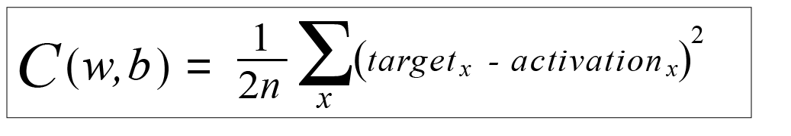

目录
欢迎>
神经网络>
分类问题>
样例>
特征>
训练集>
神经元>
权重与偏置>
激活函数>
活跃值>
输入层与输出层>
隐藏层>
反向传播>
代价函数>
梯度下降法与学习率>
权重更新>
自由尝试>
什么是代价函数？
我们想知道我们网络的输出与目标值相差多少
为了做到这一点，我们需要使用“代价函数(cost function)”

其中：
n = 数据点的个数
x = 对每个输出神经元
输出神经元的活跃度取决于网络的当前网络的权重和偏置
看起来很复杂？
没关系，我们只需要知道这是一个函数，它的输入是整个神经网络的所有权重和偏置，而它的输出值我们称作神经网络的“代价(cost)”
我们的目标就是通过训练，不断调整权重和偏置，使“代价”变得更小，从而提高神经网络的准确性。
上一步
下一步